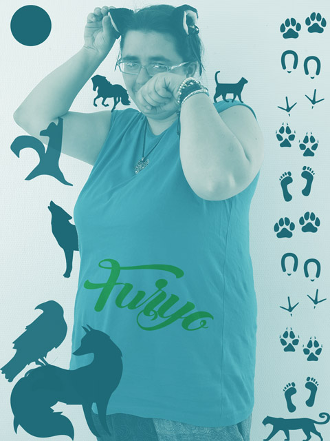
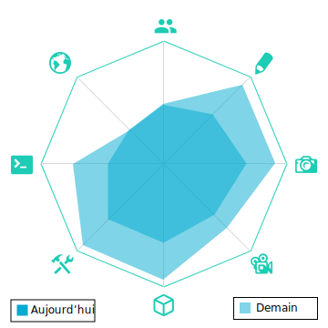

Furyo
Marion Röderer
Race: Humaine
Classe: Métamorphe
Pouvoir: Parle la langue des bêtes, lui permettant si elle le veut de prendre de belles photos de ses amis les animaux(si elle arrive à s'en faire obéir)
Élément: Eau
Couleur: Bleu
Caractéristiques: Pacifiste, elle se déplace sans armes. Ne la sous-estimez pas pour autant car elle est comme l'eau qui dort.
